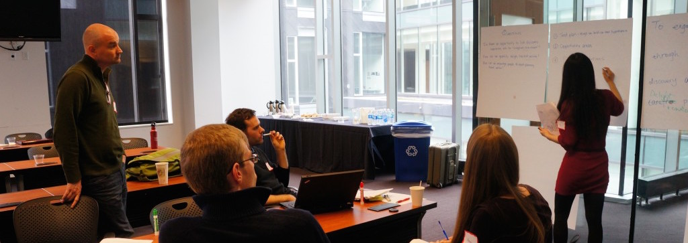
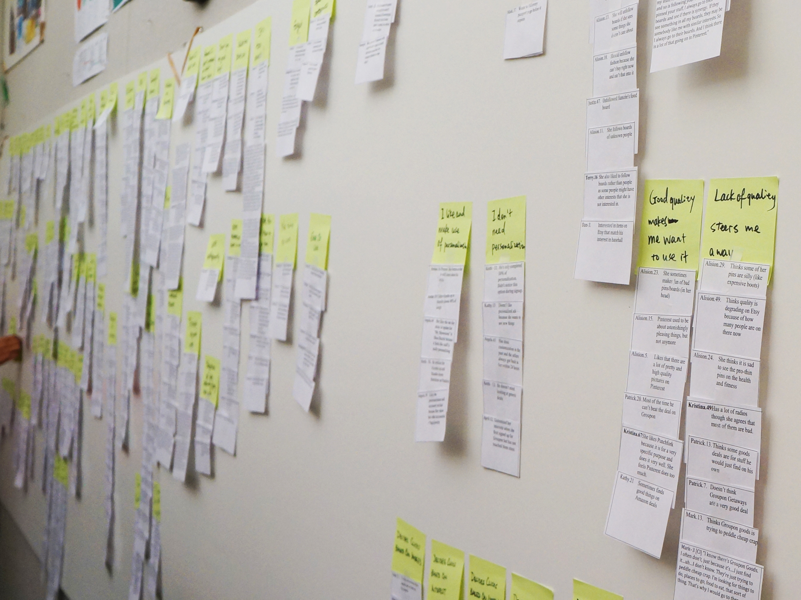
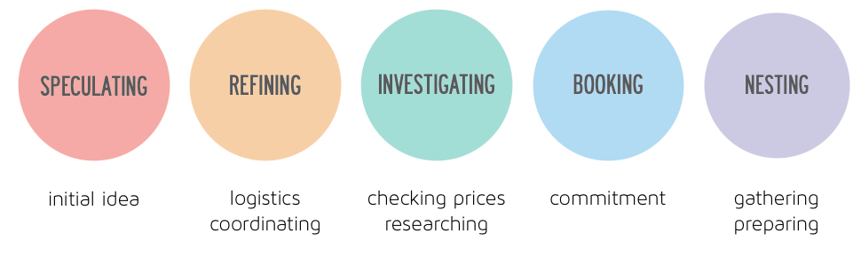
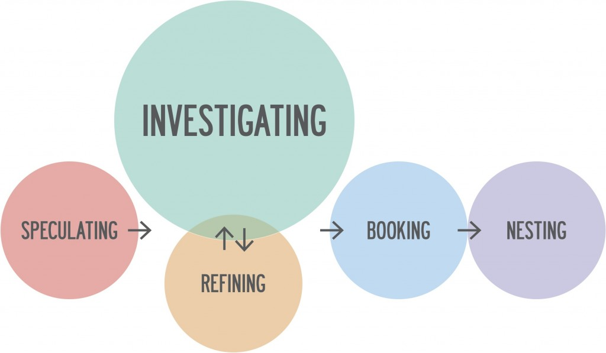
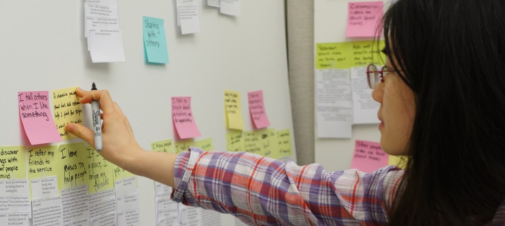
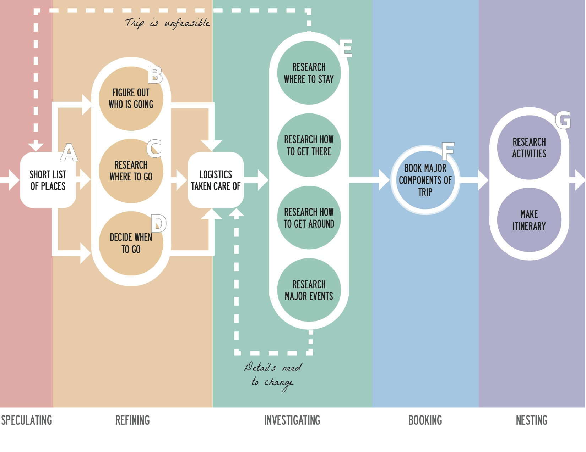
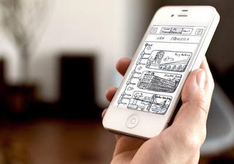
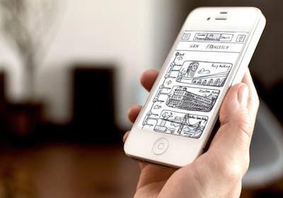
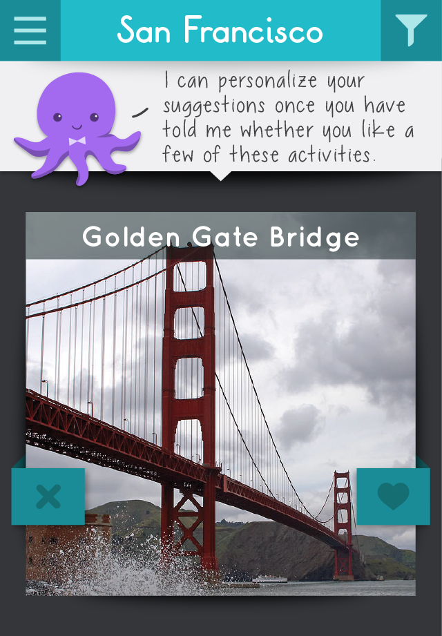
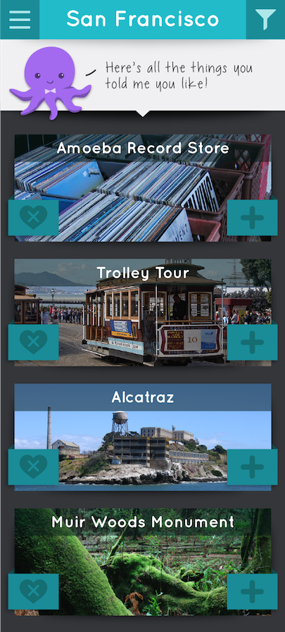

Oliver
Curated Travel Planning
Design and prototype a product that allows people to incorporate travel planning into their everyday lives
8 months
product management,
user research & data synthesis,
physiological test method research,
branding & logo design,
team website design,
scope definition,
wireframing,
prototyping
For many people, travel is addicting. But when it comes down to actually planning a trip? Totally different story.
Expedia has been the world’s largest online travel booking site for over 15 years, so they are very familiar with the pain points in the travel planning process. They enlisted our five person team (via MHCI) to investigate characteristics that make experiences like Pinterest, Pandora, and Groupon so addicting. Is there a way to apply those principles of habitual discovery to how people think about travel in their everyday lives?
Project Definition
We began with a kick-off meeting to define the initial scope of the project and create a hunt statement that would shape our research and synthesis process for the next few months.
Our goal: “to engage travelers through habitual discovery, delightful planning, and confident decision making“.

Research
We began our research process with a literature review and competitive analysis of both discovery and travel services. This helped us to understand the relationships between existing sites and identify leaders in different areas.
We then began our field research, which consisted of talking to over 102 participants across the country.

Contextual interviews consisted of visiting a participant’s home and observing how they naturally used discovery and travel websites. These interviews revealed how people typically interact with these services and what keeps them coming back on a regular basis.
Guerrilla interviews were conducted by traveling to a popular travel destination and asking people about their travel planning process. These retrospective interviews gave insight into how people plan travel and whether their plans change once traveling.
Joy visits centered around talking to people who had activities they were passionate about, such as dancing, art, theatre, games, or biking. The goal here was to learn more about delight and flow outside of the digital space.
Journal studies consisted of asking participants to fill out a journal page each day detailing their thoughts and feelings about travel, as well as any travel planning activities. This helped uncover how travel fits into people’s everyday lives. We conducted both two-week and two-month studies, in order to see the travel planning process over longer stretches of time.
Synthesis
All of the field research yielded a lot of data to sift through. The main method we used to synthesize the data was affinity diagramming, in which each data point becomes a short note on a piece of paper. Notes are then grouped based on similarities, revealing the overarching themes and trends in the data.


We also created a new synthesis method to help us deal with unpacking the data from the long-term journal studies. Each participant’s journal responses about travel planning were mapped onto a timeline.
Based on trends in the data, we identified five key stages of travel planning. We highlighted each data point based on which of the stages it corresponded to. This allowed us to see similarities across participants and identify several different travel planning personas.
Insights
From the data, we identified three key insights that would help inform our design:
- Confident researching and organizing make travel planning more delightful and less stressful.
- Exploration is more enjoyable when the content is relevant, but there is still a desire for something novel
- Experiences are better when they are shared with others, but coordination between people can be difficult.
We also found five stages of travel planning from our journal studies.

However, we found that people did not always move linearly through these stages, and different people often had different methods of planning travel. We identified nine main travel planning profiles and grouped each of our 36 journal participants into one of these profiles.
For example, people who fell into the Price Checkers profile tended to spend a disproportionate amount of time in the investigating stage, and often completed it in parallel with the refining stage.

Visioning
Based on our findings from the research stage, we moved into visioning. The goal throughout visioning was to generate design ideas from our insights and to narrow them down to find one that would be best suited for our hunt statement and project scope.
We began with ideation based on our affinity diagram and travel profiles, during which we “walked the wall” (actually several walls) of data and wrote down any design ideas.

We narrowed these ideas down to our top ten most intriguing ones and created storyboards for each of them. We then showed these storyboards in a speed dating format to our journal participants in order to elicit feedback and narrow down the ideas even further.


We also conducted a visioning workshop with our clients, after presenting our research and insights to them. We did several group design activities together, such as brainstorming where a hypothetical new service might fit into the existing landscape of products.
To help pull together all of these different methods and ideas, we created a user journey diagram that outlined how a user might move through the travel planning process. We also created an accompanying chart that outlined user needs, thoughts, feelings, barriers, touchpoints, and service content for each stage in the user journey.

To help us narrow down our feature set, we also created an achievability matrix, where we mapped features based on how impactful and feasible they were. We primarily chose features from the upper right quadrant of the matrix.

Finally, we created three design principles to help guide our future design decisions:
- Travel planning should be quick and effortless. We found that many people dreaded travel planning because of how time consuming it tended to be. We wanted to make sure our solution helped to alleviate this problem.
- People should be able to choose how they plan travel. Based on our travel profiles from our research findings, we knew that different people tended to plan travel in different ways. We wanted to make sure to support people’s natural way of travel planning, rather than try to force them into a planning profile that didn’t make sense to them
- Confident decision-making requires relevant information. We found that people often struggled to make a definite commitment to their travel plans, and this often stemmed from feeling like they were missing key information. We wanted to make sure to include the information needed for people to feel secure in their decisions.
Rapid Iteration
After wrapping up our research and visioning, we moved on to design. We created a weekly iteration cycle where we would design and build the next iteration in the early part of the week, receive feedback from our faculty advisors and clients, and then take it to test with users every Friday.

 

Using this iteration cycle, we created 8 different prototypes. Throughout the design-build-test cycle, our underlying concept changed twice, with smaller iterations within each concept.
We initially created paper prototypes to test early ideas.
These paper prototypes became clickable prototypes using POP and then we moved to Flinto for more robust interactions.
Our final concept was prototyped as an actual iOS application, and we shared it for testing using TestFlight.
Concept Video
Our biggest challenge was narrowing down the scope of our project. We had unearthed so many problems with the travel planning process that it was hard to cut down the feature list. Our initial prototype attempted to solve too many problems at once, which of course resulted in it not doing a good job of addressing any of them. Throughout the iteration cycle, we continued to fine-tune our scope until we were focusing solely on activities to do while traveling and the act of discovering new things to do. Here is a concept video for Oliver, our final product.
Final Designs
The application centers around the discovery screen, where Oliver, an intelligent octopus facilitator, suggests new activities. The user then has the choice to hide, favorite, or skip each suggestion, and Oliver is able to learn from this input in order to better tailor his suggestions.
Based on our insights from our research, we knew that limiting the information presented was important to users. We included a few simple filters to help limit the scope of discovery, while still allowing for novel suggestions.


Users save activities they are interested in to their Favorites list, and keep these activities in mind for the next time they are visiting a city.
When actually planning a trip, they create an itinerary and add items from their Favorites, or they can just ask Oliver to suggest an activity.


For more information about our process, check out our project website.
We also created two books detailing our spring research process and our summer design process.